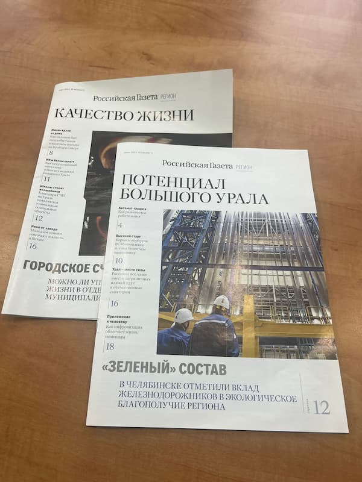

Знаковый контракт был заключён в текущем году, когда типография «Лазурь» одержала победу в тендере на печать полноцветных выпусков «Российской газеты» — официального издания, имеющего особый статус в системе государственных СМИ России.
«Российская газета», как ведущий информационный ресурс страны, предъявляет самые высокие требования к качеству полиграфического исполнения своих материалов. Победа в тендере стала признанием профессионализма команды типографии и подтверждением её технической оснащённости.
Специалисты предприятия успешно справляются с условиями контракта, обеспечивая своевременное выполнение всех заказов. Современное оборудование и передовые технологии печати позволяют достигать исключительного качества цветопередачи и чёткости изображения.
Руководство типографии отмечает, что работа над полноцветными выпусками «Российской газеты» требует особого внимания к деталям и строгого соблюдения всех технических параметров. Команда предприятия демонстрирует высокий уровень профессионализма, эффективно решая поставленные задачи.
Партнёры компании могут быть уверены: типография «Лазурь» продолжит поддерживать высокие стандарты качества и надёжности в реализации самых сложных полиграфических проектов.